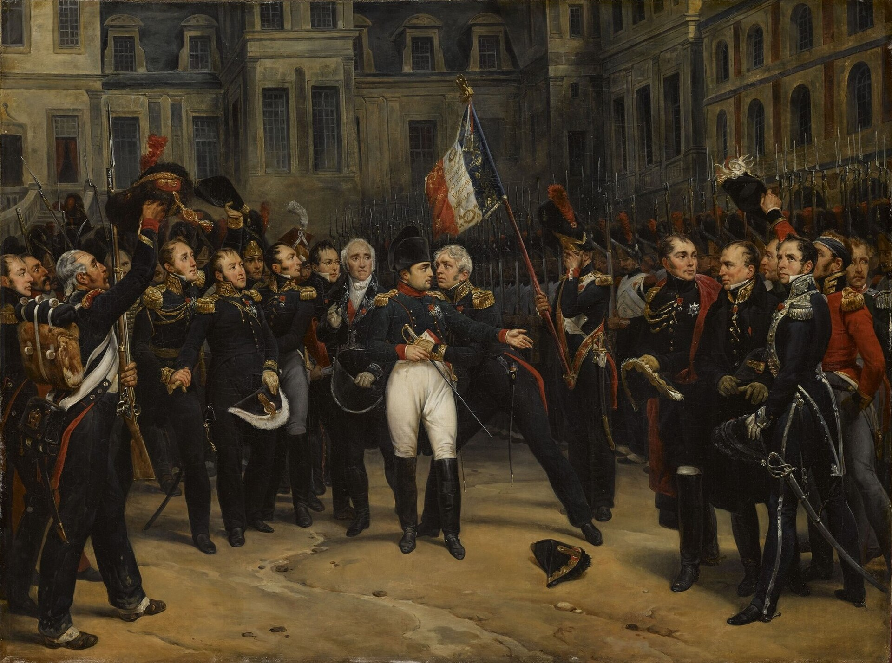
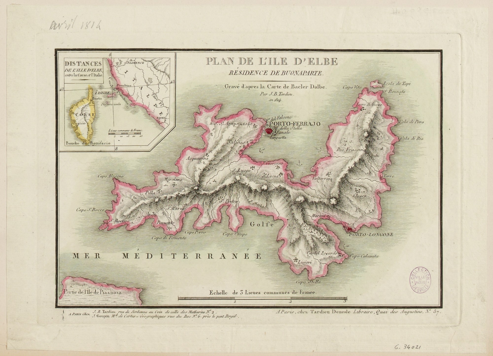
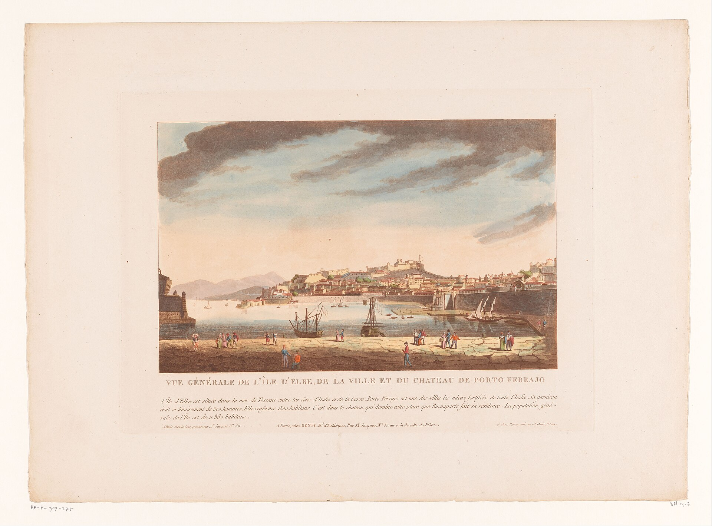
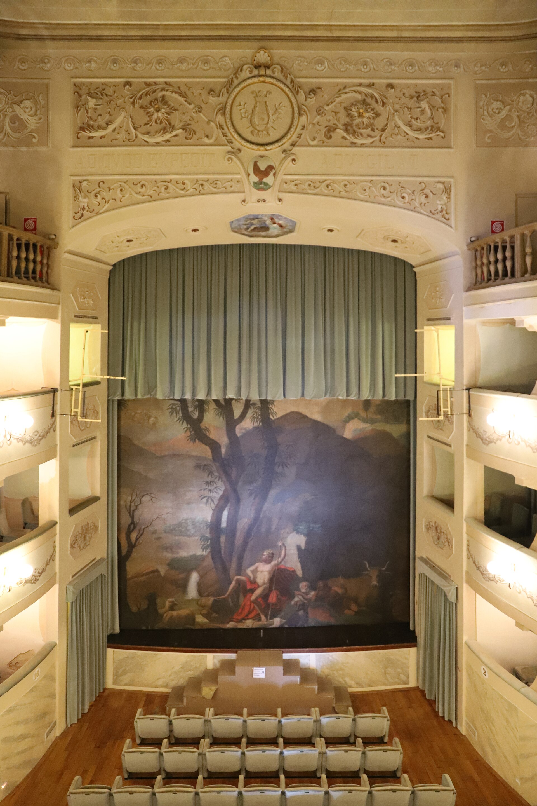
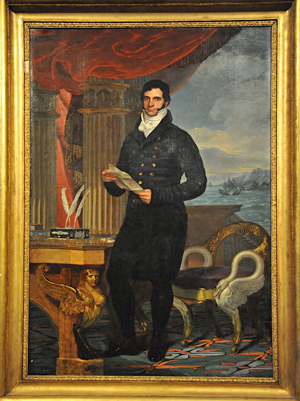
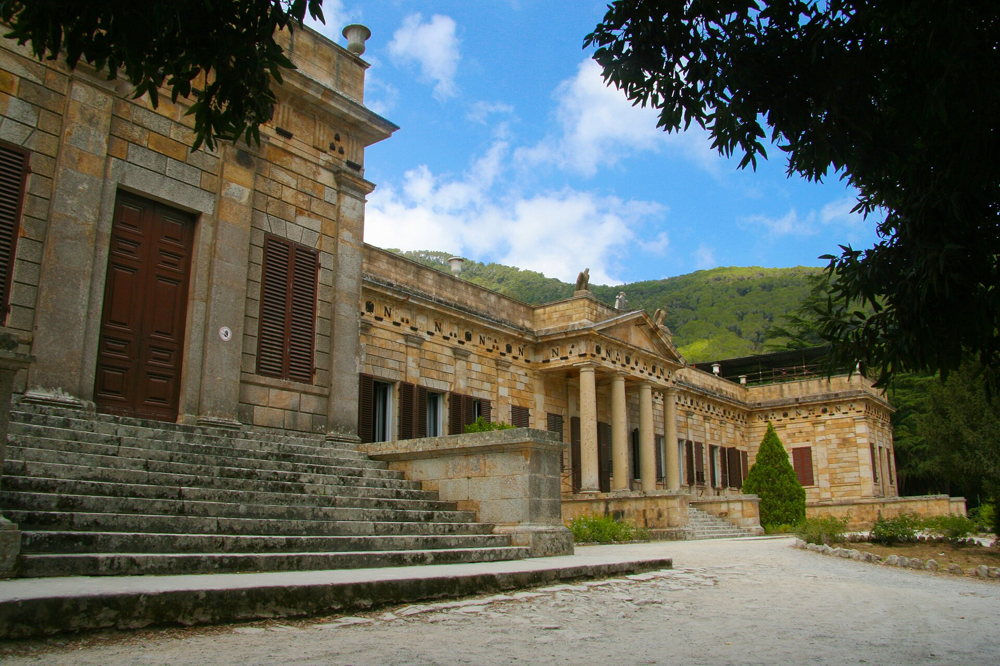
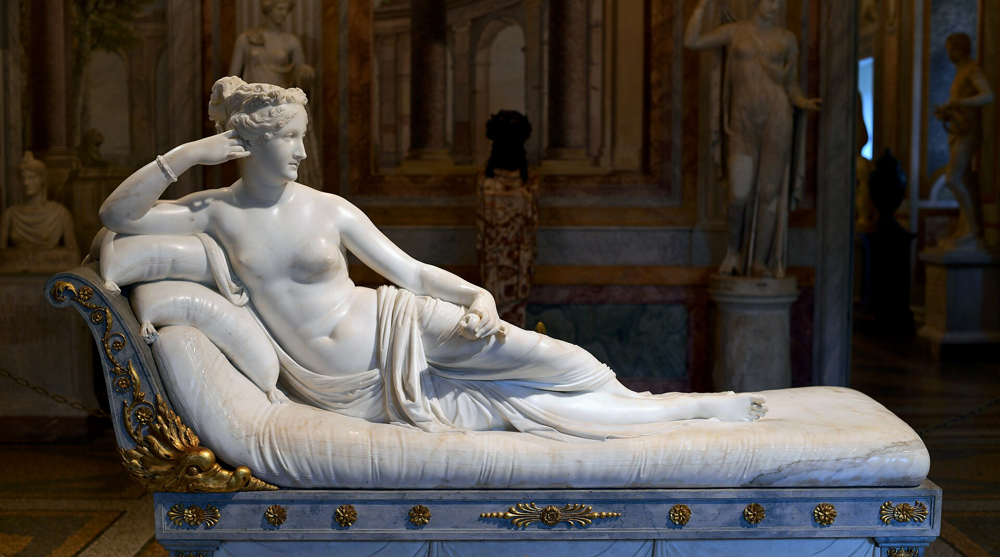
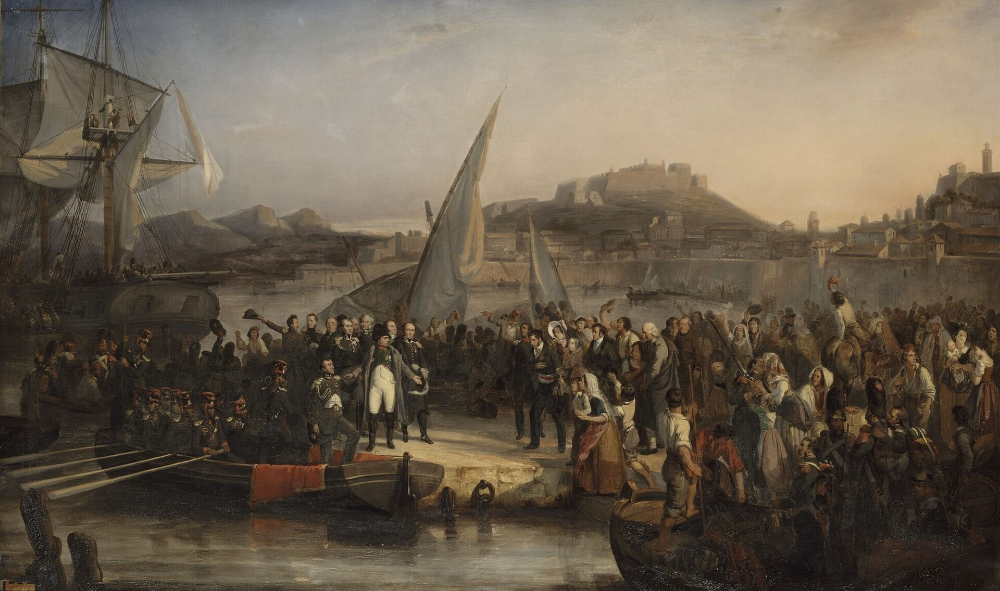

The story everyone knows is the escape: the brig slipping out of the harbor, the Old Guard marching on Paris, the regiment sent to arrest him switching sides. The Hundred Days. Waterloo. The story almost no one knows is what he did with the ten months in between, and it is the more instructive one. Given the smallest possible command, a punitive rock in the Mediterranean, the most capable administrator in Europe could not stop himself from building. He arrived with a defeated army and no working stipend, and within a single year the island had new roads, a working harbor, reopened mines, a school, a theatre, a public library, fountains, a hospital, refuse collection, a court of appeal, and an overhauled legal system. It is the clearest demonstration on record of what a real operator does with a patch of ground, and it is a standing rebuke to every modern city that has been handed far more and built far less.
The record of those ten months survives in unusual detail, and much of it is firsthand: the journal of Sir Neil Campbell, the British commissioner who wrote down his conversations with Napoleon; the diary of Captain Thomas Ussher of HMS Undaunted, the frigate that carried the Emperor into exile; the memoirs of Andre Pons de l'Herault, who ran the iron mines; and the account books of Peyrusse, the treasurer, in which every franc of the little state is entered. This article quotes all of them.
Napoleon abdicated at Fontainebleau in April 1814. Campbell reached the palace on the evening of April 16 and was shown in to the fallen Emperor the next morning, and his description of that first audience is worth reading as a portrait of a builder at the bottom of his arc.
"I saw before me a short active-looking man, who was rapidly pacing the length of his apartment, like some wild animal in his cell. He was dressed in an old green uniform with gold epaulets, blue pantaloons, and red topboots, unshaven, uncombed, with the fallen particles of snuff scattered profusely upon his upper lip and breast."
The Treaty of Fontainebleau, signed on April 11, sent him into exile on paper that looked generous. Article 3 provided that Elba "shall form during his life a separate principality, which he shall possess in full sovereignty and property," together with "an annual revenue of two million francs, which shall be carried as a rent-charge upon the great book of France." He kept the title of Emperor, now Emperor of Elba, and was granted a personal guard. He would never receive a single payment of that stipend, a fact that shaped everything he did for the next ten months. On the morning of his departure he told the Austrian commissioner, General Koller, that he wanted nothing beyond security against pirates: "Je vivrai la comme juge de paix," he said. I shall live there like a justice of the peace. Campbell wrote it down and, within weeks of reaching the island, stopped believing it.
Before the convoy rolled south came the scene in the Cour du Cheval-Blanc on April 20, when Napoleon said goodbye to the Old Guard. Campbell set the speech down on the spot, "as nearly as I could recollect the words, in conjunction with the other Commissioners."

"Officers, non-commissioned officers, and soldiers of the Old Guard! I bid you farewell. For twenty years I have found you ever brave and faithful, marching in the path of glory... You are all my children. I cannot embrace you all, but I will do so in the person of your General."
He embraced General Petit, kissed the eagle standard, and closed with "Farewell! Preserve me in your remembrance!" Campbell recorded the crowd in a single line: "Some of the officers and men wept, some remained silent with grief, while others called out 'Vive l'Empereur!'" He sailed from the south of France aboard the British frigate HMS Undaunted, and on May 3 to 4, 1814, he came ashore at Portoferraio and took possession of a sovereignty roughly the size of an American county.
He did not arrive alone: he brought a government and an army. General Antoine Drouot became Governor of Elba. Grand Marshal Henri-Gatien Bertrand ran his household and staff. Peyrusse became Treasurer and Receiver-General of the island. General Pierre Cambronne commanded the guard. The military establishment was about a thousand men in total: roughly six hundred of the Old Guard (grenadiers, chasseurs, sailors, and gunners), a hundred Polish lancers, fifty gendarmes, and a Corsican battalion of three hundred recruited on the island itself. His navy was the brig Inconstant, about three hundred tons, eighteen guns, later up-gunned to twenty-six, with a handful of smaller vessels. This was the apparatus he pointed at an island of twelve thousand people and eighty-six square miles.
Elba in 1814 was nearly 150 kilometers of coastline, a population of about twelve thousand, and not much else. Iron mines that had been worked since the Etruscans. Salt works. Scrubland and vineyards on the slopes. A tuna fishery. A half-functional harbor at Portoferraio between the forts Stella and Falcone. Pirates and smugglers along the coast. Half the villages had no road connecting them to any other village. The French garrison Napoleon inherited told the same story of neglect: Ussher noted that a force of roughly three thousand men had melted away through desertion and discharge to about seven hundred by the time the Undaunted anchored. It was, in short, an ordinary neglected place, the kind of jurisdiction that in every century absorbs money and produces excuses. He set out to change it, and the record of how he did it survives almost week by week.

The takeover began before he even stepped ashore. On May 3 a delegation of Elban notables, Pons among them, came aboard the Undaunted to be presented to their new sovereign; Pons recorded his own vertigo at the meeting: "It all seemed to me a dream, a painful dream, a frightful dream." The same day the Emperor's first message went to the islanders through General Dalesme, the French commandant, whose printed proclamation quoted him directly: they should know "that they will be the constant object of my most active concern."
Ussher's diary for May 4 catches the founding morning of the little state. Napoleon was on deck at daylight, talked for two hours with the harbour-master, then, working from "a book with all the ancient and modern flags of Tuscany," fixed the design for a national flag, white with a red diagonal band bearing three golden bees, and had the ship's tailor run up two copies so one could be flying over the batteries by one o'clock. It flies over Elba to this day. When he landed that afternoon, through a harbor loud with bands of music and shouts of "Vive l'Empereur!", the keys of the town were presented to him on a plate. He was at work before his subjects woke the next day. "At 4 a.m.," Ussher wrote, "I was awakened by shouts of 'Vive l'Empereur!' and by drums beating; Napoleon was already up, and going on foot over the fortifications, magazines, and storehouses." That afternoon he rode two leagues into the country and gave money to the poor he met on the road.

He did not rest a day. In his first weeks he toured the island end to end on horseback, inspecting the mines at Rio Marina, auditing the salt works near Portoferraio, meeting the mayors, cataloguing the harbors and the coastline, and identifying, item by item, what was broken. He was a trained artillery officer and he read ground for a living; he did the survey himself rather than commissioning one. By early summer he had a written reform program for the entire island. He took possession of his two residences, the Palazzina dei Mulini on the ridge above the harbor and the Villa San Martino inland, which he began remodeling as a private retreat. On May 26 five British transports arrived from Savona carrying about 750 volunteers of his Guard. The same day he visited the Undaunted, made a speech to the crew, and sent them a thousand bottles of wine and a thousand dollars; when the frigate sailed in early June he embraced the captain "a la Francaise" and said, "Adieu, Capitaine, comptez sur moi. Adieu!"

Through the height of summer the reform program became construction. He put men to work on the roads, the drainage, the harbor, and the mines all at once. Portoferraio got an underground drainage system to stop the streets from flooding; streets were widened, with walls knocked down where they had to be so the imperial carriage could pass; the road from the town up to his residence was paved. Out on the island he began a network of new roads, including the road up to the hermitage of the Madonna del Monte and the roads linking Portoferraio to the mining districts. He issued decrees on modern agricultural methods, pushed the expansion of the vineyards and the wine trade, and reorganized the tuna fishery. He was, by every account, everywhere at once, because with a defeated army and no stipend the one resource he had in surplus was his own restless attention.
In August his mother, Letizia Bonaparte, known as Madame Mère, arrived on Elba and took a house near the Mulini palace. Her arrival, and soon his sister Pauline's, turned the exile court into something resembling a real capital's social life: concerts, balls, receptions, and theatrical evenings became regular fixtures. Napoleon meanwhile kept the administrative machine running at full speed, holding weekly councils, reviewing his guard daily, and requiring his court to appear in formal uniform. The building went on around the social season; the two were not in competition.
On September 1, 1814, Marie Walewska, his Polish mistress, arrived on the island with their young son Alexandre. They stayed a few days at the hermitage of the Madonna del Monte, high in the hills, before she left again; his wife, the Empress Marie Louise, and their legitimate son never came at all. That same month the Congress of Vienna opened, and with it the first serious talk among the powers of moving Napoleon somewhere far more remote than a Tuscan island. Names like St. Helena, St. Lucia, Trinidad, and the Azores began to circulate. The exile that was supposed to be permanent and comfortable was starting to look temporary and precarious, and Napoleon, well informed through smugglers and visitors, knew it. To Campbell he performed serenity, delivering at an audience on September 16 a speech of retirement that reads very differently once you know what came five months later.
"I think of nothing outside my little island. I could have kept up the war during twenty years if I had wanted that. I exist no longer for the world. I am a dead man. I only occupy myself with my family and my retreat, my cows and my mules."
Through the autumn the public works matured into institutions. He founded a public library that grew to some eleven hundred volumes. He began converting the deconsecrated Chiesa del Carmine into a proper theatre, the Teatro dei Vigilanti, still the main theatre on the island. He built fountains, established a hospital, and instituted regular refuse collection in Portoferraio, an unglamorous municipal service the island had never had. He stood up a court of appeals and a road inspection corps, the small permanent bodies that keep infrastructure and justice functioning after the builder has moved on. This is the tell of a serious administrator: not the monuments but the maintenance, the library and the garbage collection and the appeals court, the boring machinery of a governed place.
By December the fiscal reality was undeniable. The stipend from France had never arrived, and the numbers in Peyrusse's ledger were brutal. Over the entire reign the island's own revenues came to just 606,309 francs, of which the Rio iron mines supplied 373,129, by far the largest single line, while the state paid out 2,852,315 francs, the war establishment alone consuming 689,317 francs in the last seven months of 1814. The gap of roughly 2.25 million was covered the only way it could be: out of the 3,979,915 francs in cash Napoleon had carried into exile. Peyrusse had watched him wave away the loss of the far larger Crown treasure at Fontainebleau with a shrug: "Bah! when one loses the Empire one may as well lose everything." Now the arithmetic of the remnant set the clock on the whole enterprise.
| What came in | |
| Rio iron mines (the largest single item) | 373,129 |
| Salt works, fisheries, customs, and other revenue | approx. 211,500 |
| Land tax, entire reign (of which 2,282 collected by troops at Capoliveri) | 21,666 |
| Total receipts, May 1814 to June 3, 1815 | 606,309 |
| Treaty stipend due from France, 2,000,000 per year: amount actually received | 0 |
| What went out | |
| War establishment (a paper strength of 1,592 men, including two never-completed battalions recruited on the island, plus the navy), last seven months of 1814 alone | 689,317 |
| War budget fixed for 1815 | 1,015,000 |
| Household budget for 1815 | 380,000 |
| Civil administration budget for 1815 (of which 40,000 for roads and bridges) | 114,530 |
| Total payments, May 1814 to June 3, 1815 | 2,852,315 |
| Deficit, covered from cash carried from France | 2,246,006 |
| Cash Napoleon brought to Elba (Fontainebleau 488,913; Orleans 2,580,002; Rambouillet 911,000) | 3,979,915 |
He responded by cutting officials' salaries, leaning on the islanders for unpaid labor, which generated real local resentment, and pressing the hated land tax, which raised only 21,666 francs in the entire reign. The mines and the salt and the wine were producing more than they ever had, but they could not close a gap that size. A sovereign state with a real army and no external funding cannot run indefinitely on an island economy, and Napoleon, who understood budgets as well as he understood artillery, could see the arithmetic ending badly.
In the new year the Teatro dei Vigilanti opened, inaugurated on January 24, 1815, in the shell of the deconsecrated Church of the Carmine, the civic capstone of the ten months and a genuine gift to the island's public life. But the same month the money forced retreat: he suspended the road-building program and halted further work on the country residence. He had built more in eight months than the island had seen in a century, and now he was being throttled by a stipend a defeated France had simply declined to pay. The combination of a closing fiscal trap and the news from the mainland, Bourbon unpopularity, a restless army, and the threat of deportation, was resolving into a single conclusion.

On February 16 the British commissioner Neil Campbell, who was supposed to keep an eye on Napoleon, left Elba aboard HMS Partridge for what he called "a short excursion to the Continent for my health," to consult a doctor in Florence about the increasing deafness from his old wounds. His journal entry on the eve of that departure is the last portrait of Napoleonic Portoferraio at full boil.
"It is scarcely possible to convey an idea of Porto Ferrajo, which is like the area of a great barrack, being occupied by military, gendarmes, police officers of all descriptions, dependants of the court, servants, and adventurers, all connected with Napoleon, and holding some place of honour or emolument in subservience to him."

In Florence, days before the escape, Campbell raised Napoleon's situation with Edward Cooke, the British Under-Secretary of State, and got an answer that deserves its place in the history of official complacency: "Nobody thinks of him at all. He is quite forgotten, as much as if he had never existed!" Back on the island, an emissary named Fleury de Chaboulon had already reached Napoleon with urgent word from Maret, Duc de Bassano, of the grave unrest in France. Napoleon moved fast. He had the Inconstant repainted to look like an English ship, re-armed, and provisioned for a hundred and twenty men for three months, and he embargoed all shipping off the island so no word could get out. On February 25 he put the question to his mother, and by her own account Madame Mère answered him like a Roman: "If death must be your fate, my son, Providence, which has not desired that it should occur in a period of an idleness which is unworthy of you, will not wish, I hope, that it should be by poison, but sword in hand."
The next evening, February 26, 1815, the little state he had built put itself quietly to sea. Campbell reconstructed the night when he returned to the empty harbor two days later: at seven the troops marched out of the fortifications "without music or noise" and embarked in feluccas and boats, and at nine Napoleon himself came down.
"At 9 p.m. Napoleon with General Bertrand passed out in the Princess Pauline's small carriage drawn by four horses, embarked at the health-office in a boat, and went on board of the brig 'L'Inconstant'... Mr. Grattan says that his curiosity tempted him to hire a boat to go alongside of the brig, as he could scarcely believe his eyes and senses. There he saw Napoleon in his grey surtout and round hat pacing the quarter-deck."
Apr 11, 1814 Treaty of Fontainebleau; exile to Elba
May 3-4, 1814 Napoleon lands at Portoferraio
Summer 1814 New roads, drainage, harbor, mines
Aug 1814 Madame Mère arrives; the court forms
Sep 1, 1814 Marie Walewska visits the Madonna del Monte
Autumn 1814 Library, hospital, theatre, court of appeal
Dec 1814 Peyrusse's ledger: 606,309 fr in, 2,852,315 fr out
Feb 26, 1815 Escape from Portoferraio: ~1,150 aboard seven vessels
The witnesses agree on the shape of his day, and it began before dawn. Ussher was woken at four in the morning on Napoleon's first full day of sovereignty to find him already on foot among the fortifications and storehouses. He walked the works in the early hours, rode the island in the afternoon, held his weekly councils, and reviewed his guard daily. Campbell, a professional soldier, spent that first summer simply trying to keep up, and on May 27, 1814, he set down the definitive account of the working method.
"I have never seen a man in any situation of life with so much personal activity and restless perseverance... After being yesterday on foot in the heat of the sun, from 5 a.m. to 3 p.m., visiting the frigates and transports, and even going down to the hold among the horses, he rode on horseback for three hours, as he told me afterwards, 'pour se defatiguer!' His thoughts seem to dwell perpetually upon the operations of war."
In the same entry Campbell added the observation London should have read as a warning: "I do not think it possible for him to sit down to study, on any pursuits of retirement, as proclaimed by him to be his intention, so long as his state of health permits corporeal exercise." The man who had promised to live like a justice of the peace was un-tiring himself with three-hour rides after ten-hour inspections, and for ten months all of that energy went into the island: into the hold among the horses, onto the fortifications at dawn, down every road, at the level of detail where problems actually live.
Around the working machine he built a court, scaled to the island but run with full imperial seriousness. Madame Mère presided; Pauline, his favorite sister, ran the social season of balls, concerts, and theatricals, and it was her small carriage, drawn by four horses, that carried her brother down to the harbor on the night of the escape. Etiquette was maintained and uniforms were required, but the men at the top took almost nothing: Drouot, the Governor, refused a gift of 100,000 francs outright and drew a salary of 12,000, about 480 pounds, and Peyrusse the same. San Martino, the country residence in the hills, got a painted Egyptian room recalling his Egyptian campaign and served as the private retreat of a man who almost never retreated.

The strangest feature of the court's season was the audience. Elba had become a destination, with English travelers in particular crossing to see the caged conqueror and touring the mines. Pons, who received most of them at Rio, recorded the pattern with some amusement: "What is uniform among the English, to whatever class they may belong, is praise of the Emperor, and really they seem to rival each other in their expressions of eulogy." The nation that had fought him for twenty years supplied his most reliable admirers.

He built a network of new roads across mountainous terrain, connecting villages that had never been connected to one another and driving new links out to the mining districts and up to the mountain hermitage. He supervised the engineering himself. The comparison is worth stating plainly: a defeated exile with no working budget and a few hundred soldiers built a durable network of mountain roads in under a year. Most modern American administrators, with bonding authority and full engineering departments, cannot deliver a single mile of a single street in the same span. In Portoferraio he also solved the problem underneath the roads, laying an underground drainage system so the streets stopped flooding, the kind of invisible infrastructure that cities routinely defer for decades. And the roads had a line in the budget: of the 114,530 francs he fixed with Peyrusse for the civil administration of 1815, 40,000 was reserved for roads and bridges.
The harbor at Portoferraio was reorganized and its trade rebuilt; within months Elba was functioning as a serious little Mediterranean port and its salt exports had climbed. The iron mines at Rio Marina, dug since antiquity, were the fiscal engine, and he treated them as such: he modernized the extraction, pushed up output, and shipped the ore out to be sold, taxing the proceeds to fund the rest of the program. By Peyrusse's ledger the mines yielded 373,129 francs of the state's 606,309 francs of total revenue, more than everything else combined. The mines he restarted in 1814 kept producing until 1981. His ten-month administration set an industrial operation running that outlasted him by more than a century and a half. He understood, as competent builders always do, that a public realm has to be paid for by a productive economy, and he rebuilt the economy first.
The mines also produced the best story of the reign, because the man who ran them refused to be bullied. When Napoleon arrived, some 229,000 francs of pre-abdication mine profits sat in the hands of Pons de l'Herault, money that legally belonged to the Legion of Honour in Paris. Napoleon demanded it. Pons, brought before him by Bertrand, records his own answer: "I replied that the money belonged to the French Government whatever might be that Government." Napoleon stared, shrugged, and turned his back; Bertrand told Pons afterward, "You have wounded the feelings of His Majesty." By Gruyer's account the Emperor shouted "after all, I am the Emperor" with such violence that the windows shook, and Pons answered that "three hundred thousand bayonets should not force him to give up the money." Napoleon left without it, and Pons surrendered the funds only after referring the matter to Paris and receiving the Legion of Honour's authorization: even a sovereign could not simply take the money, he had to wait for the lawful owner to sign it over. The mines went on out-earning everything else on the island under the same administrator.
The list of civic works is what separates an administrator from a tourist. In ten months, on an island of twelve thousand people, he built or established: a public library of some eleven hundred volumes; a theatre carved out of a disused church; fountains; a hospital; regular municipal refuse collection; a court of appeals; and a road inspection corps. He overhauled the island's legal and administrative system from top to bottom. By the island's own account it was the first effective civic administration Elba had ever had. He governed the smallest state in Europe with the same seriousness he had brought to a continent, because seriousness is a habit, not a function of scale.
The flotilla that left Portoferraio on the night of February 26 was the Inconstant, now carrying twenty-six guns, together with the merchant brig Saint-Esprit, the bombard Étoile, the felucca Caroline, and several smaller craft, seven vessels in all. Aboard were about eleven hundred and fifty men: the six hundred of the Old Guard, a hundred Polish lancers without their horses, the three hundred of the Corsican battalion, fifty gendarmes, and around a hundred civilians and servants. Light winds becalmed them; by dawn on the 27th they had barely made ten kilometers, and that afternoon a French brig, the Zéphir, came close enough to hail before its captain was talked past. On the crowded deck Napoleon told his companions how it would end; Peyrusse recorded the prediction: "I shall arrive in Paris without firing a shot." At dawn on March 1, 1815, the flotilla raised the tricolor and by early afternoon anchored at Golfe-Juan, between Cannes and Antibes. Napoleon was back on French soil.

The proclamations he brought ashore had been printed at Portoferraio before sailing and dated Golfe-Juan, March 1, 1815. To the French people he explained the exile in a single sentence: "I consulted only the interests of the nation; I took myself into exile on a rock in the middle of the sea." To the army he gave the image that carried the whole campaign: "Victory shall march in double quick time; the eagle bearing the colours of the nation will fly from steeple to steeple until it reaches the towers of Notre-Dame Cathedral." The march north then produced the scene that defines the whole return. Near Grenoble, at Laffrey, he met a battalion of the 5th Regiment of the Line, sent to stop him. He walked forward alone, opened his coat, and, by the traditional account, called out: "Soldiers, do you recognise me? If there is one among you who wishes to kill his Emperor, here I am." The battalion switched sides to a man. The men sent to arrest the revival became the revival. He reached Paris on March 20 without a shot fired, exactly as he had told Peyrusse he would, and the Hundred Days had begun. They would end at Waterloo in June.

Nothing captures the collapse of the Bourbon regime's nerve like the way the Paris press covered the march. As Napoleon drew closer to the capital, the headlines climbed from contempt to terror to open flattery, the same man renamed step by step from monster to Emperor. The sequence below is the famous, much-embellished version long attributed to the official gazette, the Moniteur; whether or not every line ran exactly as legend has it, the arc is real, and it is the sound of an establishment discovering it has no ground to stand on.
The empire did not survive, but the island did. Most of the modern roads on Elba, the harbor works at Portoferraio, the drainage, the civic squares, the theatre, and the school and library system still trace to those ten months, and the Rio Marina mines he reopened ran until 1981. A man passing through as a prisoner, expecting to leave, left behind the permanent civic bones of a place he governed for less than a year and never saw again. That is the strange, clarifying fact at the center of the story: he built Elba not because he loved it or planned to stay, but because building is what a serious operator does with any ground he is standing on.
This site is an argument that competent civic building is a real and teachable practice, not an accident of money or luck. Elba is the cleanest possible test of that argument, because it strips away every excuse. No budget: the stipend was never paid, and Peyrusse's ledger shows the state spending 2.85 million francs against 606,309 of revenue. No time: he had ten months and did not know it would be ten months. No mandate worth having: he was a defeated prisoner on a rock the powers of Europe were already planning to take from him, a man a British Under-Secretary could dismiss, days before the escape, as "quite forgotten, as much as if he had never existed." No workforce to speak of: a thousand soldiers and a poor island population. And still, in that single year, a network of new roads, a rebuilt harbor, reopened mines, a library, a theatre, a hospital, a court, and an overhauled legal system.
Seattle has eighty-four square miles, almost exactly the area of Elba. It has had not ten months but twenty years, a multi-billion-dollar budget, professional engineering and planning departments, and a peacetime mandate from its own voters. It has produced neither the roads nor the harbor works nor the balance sheet. The gap between what Napoleon did with Elba and what a modern American city does with the same acreage is not a gap of resources but a gap of seriousness, of accountability, and of the plain willingness to survey the ground, write down what is broken, and build it.
The point is not the strongman. Napoleon the conqueror is not the man to admire here, and the empire he tried to rebuild ended in a field in Belgium. The man to study is Napoleon the administrator: the surveyor on horseback, the lawgiver, the builder of roads and libraries and drains, the man Campbell described with "so much personal activity and restless perseverance" that hardened soldiers sank under the fatigue of following him around an island the size of a county. The lesson of Elba is that this kind of competence exists, that it is recognizable, and that it can be applied to any patch of ground by anyone willing to do the work. That is the standard. Most places do not meet it. The first step to meeting it is to notice that a bored exile, running at a deficit, with the powers of Europe closing in, did.
Building this kind of civic capacity in a real American city. Tell us who you are.
Sources. Primary: Sir Neil Campbell, Napoleon at Fontainebleau and Elba; being a Journal of Occurrences in 1814-1815 (John Murray, 1869), for the Fontainebleau audiences, the farewell to the Old Guard, the journal entries of May 26-27 and September 16, 1814 and February 16 and 28, 1815, and the escape reconstruction; the diaries of Admiral Sir Thomas Ussher and John R. Glover, Napoleon's Last Voyages (1906), for the voyage, the flag, the landing, and the routine of May 4-5, 1814; Andre Pons de l'Herault, Souvenirs et anecdotes de l'ile d'Elbe, and the treasury accounts and letters of Peyrusse, both as translated and printed in Norwood Young, Napoleon in Exile: Elba (1914), which also prints the Treaty of Fontainebleau of April 11, 1814; Paul Gruyer, Napoleon, King of Elba (1906), for the 1814 war spending, the army strength, and the Pons confrontation; and the Golfe-Juan proclamations of March 1, 1815, at the University of Warwick's Napoleon's 100 Days project, with the original broadside at Gallica (BnF). Secondary, for the public works, reforms, and chronology: Wikipedia, "Principality of Elba"; napoleon.org and infoelba.com; Portoferraio bicentennial materials; Shannon Selin, "How did Napoleon escape from Elba?"; History.com; visitelba.com (Walewska visit and the flag). Compiled and cross-checked July 2026.